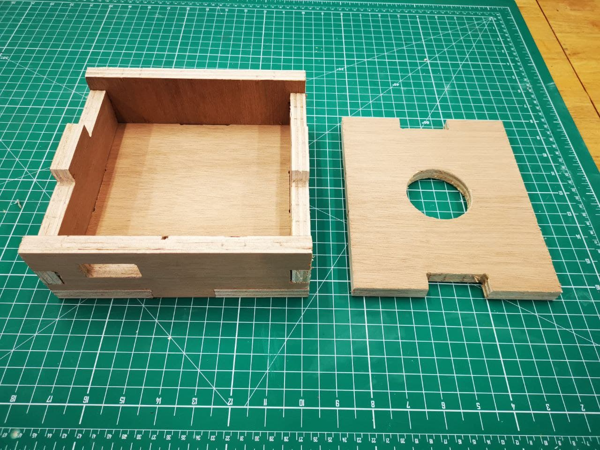
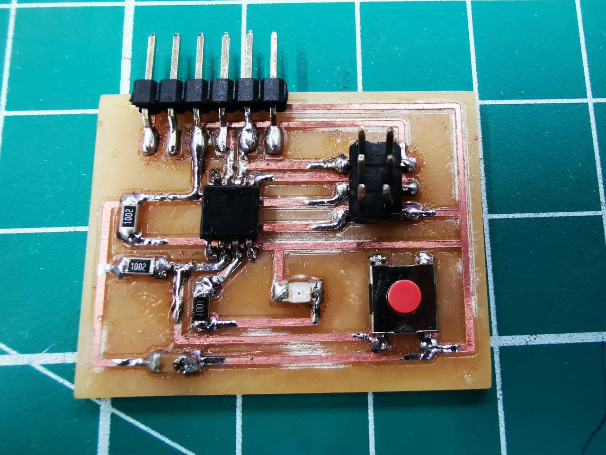
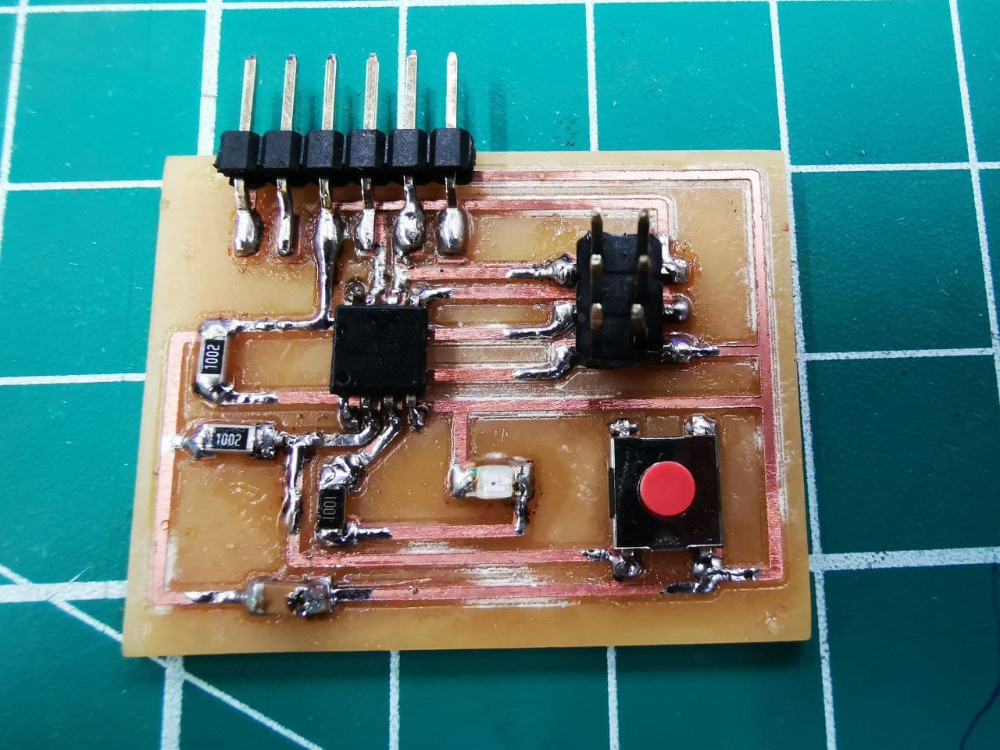

Module Project
For our module project, we have to apply what we have learnt in this module. Hence, i decided to make a lithophane which incorporates most of the technologies and skills that i've learnt.
I got the idea of making a lithophane after searching on the internet and looking at other students projects for references as well as a source of inspiration. As i kept thinking about how i can make this lithophane of mine unique as well as decorative, i realised that i can also make use of the concepts that i've learnt in DFAB 1 to make a CNC cutout of a rectangular box to store my electrical components to act as my base, and this idea eventually led to my first prototype design.
CNC Cutting
Firstly, to make the base casing for my Lithophane design, i used fusion 360 to design a 20cm x 20cm x 7cm dimension of the casing, and a circular hole cut out at the top with a diameter of 6cm to allow opening for the lighting to be placed.
Here is the actual casing that i made doing the CNC cutting session with Mr Steven's assistance.
3D Printing
Next, using the website "itslitho.com" and with the help of a friendly intern at fablab Zac who gave me tips on making a good lithophane by helping me optimize the settings for the 3d printing of lithophane on itslitho and CURA, I created a lithophane which is 10cm x 15cm using fusion 360 and here is the 3d printed lithophane which is the highlight of the entire design.
I also created a slot for the lithophane which allows me to change the design of the lithophane in the box, this promotes flexibility in the use of the product. The slot design was made with a height of 15cm and length of 10cm with an additional leeway of 0.2cm on both ends on the slot for the lithophane to enter smoothly.
Laser cutting
I also created a enclosed box for my lithophane design which have slots that can be assembled, the components are designed on fusion 360 as well and i engraved my Logo and name on the box to make it a unique design of mine.
After laser cutting, i used wood glue to adhere the slots in place, the wood glue takes roughly 30 minutes to dry during which i applied slight pressure with some weight on top of the case so that the areas are in contact with one another.
Embedded programing
I used the ISP and ATtiny85 that was created for our individual project for embedded programming since my code is rather simple and ATtiny85 provides sufficient memory for my needs hence there wasn't a need for me to make another program board.
On the ATtiny85, i soldered a push button onto the circuit board at where the button on the circuit board was attached to, this allows me to control the board with an extendable button that will be used in the design.
 

With the help of my friend Xavier, mah G i'll always remember you for helping me all the time along the way!I had successfully created a code that will control the colours on the neopixels which is my output device.
Here is the first time testing out the code.
The code works fine, I eventually finalised the colours to display by making mild changes to the code.
.png)
.png)
Assembly of all components
With all the required materials prepared, we can assemble the components together.
And we are done! Let me show you how it works!
I showcased the design in a dark room, where the light displays the lithophane in its fully colours, very awesome!
Presentation of project
Here is the image for my presentation:"Presentation thumbnail"
and here is the video for my presentation: "Presentation video"
Conclusion
In conclusion, throughout the entire module and the final module project, i learnt alot of hands-on skills and gained alot of experiences from all the past failures and attempts that i had made, this experiences allowed me to understand that there is still alot of room for improvement that can be done and i should always strive to make things even better.
For my module project, although the idea of the lithophane design was good in my opinion, perhaps i should have consulted a friend or someone for their opinion on my design to see if they were any critical flaws that i may have missed out so that i can work on the design. As i went on with the project without considering the issues that may occured, i had to improvise in what i do often, which would have been better if i had just thought things through and spend more time in the planning stage. Examples of the issues listed by Mr steven during my presentation of my design project includes: Electrical components protruding out of the casing instead of having a fixed port for the plug-in, Neopixels Leds are not mounted on a sturdy platform and electrical board are not mounted onto the CNC casing. So those are the issues identified and one thing i realised was that if i were to receive this as a product design from a client, this are the issues that i would have pointed out myself too. Hence, i should have put in more thought about creating a design that actually incorporates all functionalities as one that is presentable.
However, as much as we wanted to go back and change the past and fix those mistakes, we can't. But, we can learn from such experiences and grow to be better! I am still very proud of my design (all the time and effort that i took :p) and if i ever were to create a project, i would make sure to take notes of the important points that i had learnt from all these experience.
A warm thank you to all my readers, my teachers Mr Steven & also Mr Yeo for their guidance and support, as well as my friend Xavier for helping me all the time xd and my fellow mates at the workshop! I had a great time in this elective and learnt so many things, and that is a great takeaway from this module!